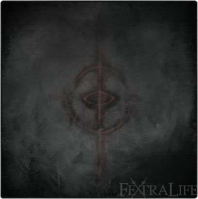

Brain of Mensis |
|
|---|---|
 |
|
| Enemy Type | Not Beast nor Kin |
| Health | 9837 |
| Drops | Living String, 2181 Blood Echoes |
| Weak | ?? |
| Strong | ?? |
| Location | Nightmare of Mensis |
Brain of Mensis is an enemy in Bloodborne.
The Brain of Mensis , also known as "Mother Brain", is an enemy resembling a giant brain with various eyes and some beastly limbs. It is essentially a large version of Winter Lanterns, though without a body.
It is first encountered from a distant tower at the beginning of Nightmare of Mensis, and will glow orange when the player is in line of sight, causing massive frenzy damage. This attack can hurt the player even from a very long distance, unless the environment is used to avoid its malignant gaze.
The Brain of Mensis can be slain after defeating Micolash, Host of the Nightmare. The player can defeat it by using a lever in a side area, dropping the brain into a pit where it will be unable to attack the player further.
Strategy
- Have 10 Sedatives equipped. Awaken at the Mergo's Loft: Middle lantern, and get into the bird cage elevator. During descent, there is a window you can jump into from the elevator.
- Run across the bridge with the 3 Winter Lanterns, using the terrain and Sedatives to avoid Frenzy.
- In the building, run past the Nightmare Apostles, descend the stairs, and pull the lever on the balcony, triggering a cut-scene that drops the Brain of Mensis into a pit.
- After the cut-scene, turn around and drop down into a hole on your right.
- In the room, there are two spiders and a chest holding the Choir Bell item which is guarded by a Winter Lantern.
- Run outside, jump down into the collapsed tower (avoiding the bottomless pit) and there is a body holding the Blood Rock.
- Follow the path out onto the bridge and enter the building with Mergo's Attendants.
- Go to the bottom floor with the holes in the ground, and ride the bird cage elevator located on the right side.
- You will enter a pitch-black room where the Brain of Mensis is now helpless and easy to kill.
- IMPORTANT NOTE: Before attacking the brain, use the "Make Contact" gesture in front of it until your character's arms rotate, and you will receive the Tier 3 Moon Caryll Rune (Great One's Wisdom in NG+ if you already have it).
Moveset
| Attack Name | Attack Description |
| Gaze | If the player is within its line of sight, he/she will take continuous damage from this far-reaching attack. |
NeoMerdien - video guide:
- how to
- how to
The Brain of Mensis Information
This enemy is unique as an important part of the story, and it is only found in one area in the game. There are no variants nor is it encountered in Chalice Dungeons.
| Location |

|

|
 |
 |
| Nightmare of Mensis | 9387 | 2181 | (1x) 100% | (1x) 100% |
Notes & Trivia
- The Living String description states the Brain of Mensis is a Great One and was found in the Nightmare by Mensis.
- The Brain of Mensis is the one attacking you with Frenzy as you try to make your way to the building and Mergo's Loft.
- The location where the Brain of Mensis is dropped after you pull a lever in Nightmare of Mensis is completely pitch black on all of its surfaces, resembling the Abyss of Dark Souls.
- It will not disappear from the game after you kill it, it will still drop blood echoes but no Living Strings (hence why the Nightmare of Mensis still remains).
- You must use the "Make Contact" gesture in a very specific location, infront of the hand, in order to obtain the rune.
- You can also do the "Make Contact" gesture after killing it (it doesn't have to be physically present) and still get the full Moon Caryll Rune.
- There seems to be a bug where killing it with a cooperator can cause you to not receive the Living String.
- The brain is often referred as "rotten" leaving us to believe that it may have corrupted the Dream of Mensis and made it the Nightmare of Mensis, as well as Micolash, who was the leader of the School of Mensis.
 Anonymous
AnonymousYou don’t have to be in a specific place to get the rune using make contact, you just have to wait about a minute until the hunter moves his arms to the other side
- Anonymous
Hey, you can deal damage to the brain while it's still suspended in chains. Killing it this way would be nigh impossible because if the frenzy. Maybe you could find a spot where you can shoot the brain with the bowblade without it frenzying you?
- Anonymous
The brain-eye thing and its frenzy inducing stuff in Bloodborne has so much in common with The Evil Within. Love them both .
- Anonymous
This thing (probably cause of the eyes) freaks me the **** out
- Anonymous
I don't know why but for some reason it reminds me of the Sailing Medallion from Monkey Island.
i can see under the map in its area, and it's not pitch black at all
is that intentional?
- Anonymous
if you kill it without getting the rune you can come back later and it will respawn so you can still get the rune
Has anyone else encountered the brain AFTER killing it? I had forgotten to get the Moon rune before killing the brain. I went back to use the "make contact" gesture, since I found a comment stating that you can get the rune anyway. When I got out of the elevator I ran straight, the brain was not there as expected. Then I realized that the heartbeat sound was present. I went back to the elevator and then noticed a faint silhouette to the right, approached it and discovered the brain! Has this happened to anyone else? By the way, I used the gesture in front of the second brain and it gave me the rune. I did not killed it this time.
- Anonymous
Think what you will of me, but the make contact gesture when I do it in front of this being is like justifying its godly self with its other great one brethens, even if it can do nothing but frenzy you until its near end. Maybe thats why it gives you a rune and/or a great one's wisdom in appreciation to you still accepting it among its peers as it lies before you with nothing noteworthy to spare in comparison to its other great ones, as the 'make contact' gesture is to accept and recognize the gods of the dream before yourself as a human, virtually 'worshipping' them. Either that or its frenzy was a cry for help for you to release it from its shackles among the tower it was forced to commence to keep the nightmare of mensis alive, and then you kill it to pull it out of its forceful misery. Whatever the case, I feel bad for this parasite looking creature.
- Anonymous
It's so ugly that it's kind of adorable and I always feel like I'm murdering a puppy when I kill it. Why can't we keep it, mom?! I swear I'll walk it...and use it to destroy my enemies
- Anonymous
I did the gesture after killing it and I got it aftet waiting for few seconds.
- Anonymous
- Anonymous
:< Sorry for smashing ya, eyeball. Don't look at me like that... die already..please die.. where is my satisfaction .. goddamit miyazaki !
- Anonymous
Visually it reminds me of a teratoma, a type of tumor that is comprised of various types of tissue, capable of forming hair, teeth, eyes, and even brain tissue. Some even grow limbs or develop into what look like malformed fetuses. Perhaps the Brain of Mensis really does represent the “stillbirth” of the scholars’ brains.
- Anonymous
- Anonymous
Does anybody know what this is whispering, whilst in the pit? All I'v been able to understand is "Please save me from..."
- Anonymous
I like how this exact page is on the wiki twice, but with a different title
- Anonymous
- Anonymous
- Anonymous
To get the rune, you simply need to stand still with the gesture for a few minutes.
- Anonymous
Caryll Runes are are visual translations of langue of the great ones and I have to ask, why is this great one telling you about the moon?
Description of the moon Rune - “A secret symbol left by Caryll, runesmith of Byrgenwerth.
A transcription of "moon", as spoken by the Great Ones inhabiting the nightmare.
Gain more Blood Echoes.
The Great Ones that inhabit the nightmare are sympathetic in spirit, and often answer when called upon.“
Indeed, this great one made contact upon being interact on and said “Moon.” Why?
I hypothesis this great one is asking you to find and kill the Moon Presence. Just a theory, I mean there has to be a reason it said Moon.
- Anonymous
If anyone is wondering why you get frenzy, I assumed this game had heavy Lovecraftian influences. In the stories humans often went insane trying to comprehend otherworldly beings. I'm assuming Frenzy state and Madman knowledge is connected. Since the more Madman Knowledge you have in you inventory the more fatal frenzy will be to your health. As the more knowledge of the cosmic horror the more insane your mind is. It also explains why you start to see the old ones hanging in spots early on in the game the more knowledge you have.
- Anonymous
1 of the attendants got into the elevator with me
It was a funny and angering experience
- Anonymous
Does using the Make Contact block the Frenzy when right next to the brain?
- Anonymous
I wonder if this thing is really TRYING to kill you with Frenzy, or if it's just calling out to you for some reason, maybe even for help. I get the feeling it doesn't really want to be strung up in that tower, plus it seems pretty chill when you make contact. Maybe... it's even trying to get you to kill it? It's also incredibly okay with you bashing its brains out (no pun intended).
Also, those "beastly limbs" look a lot like withered versions of Amygdala's arms. The hands have six fingers, and there's a strange hole in the center of each palm. Though this detail is also seen in the scurrying creatures that carry the blood shards, which is kinda weird, so I'm not sure if this is directly relates the Brain to Amygdala or those hands are just a recurring detail.
- Anonymous
Anyone looked real closely at the "body" of the brain. The parts which arent eyes/tentacles/hands appear to be made up of messengers.. Think on that
- Anonymous
“This Cord granted Mensis audience with Mergo, but resulted in the stillbirth of their brains”…IMO, the mother brain is the stillbirth of Mensis's brains...
- Anonymous
What I'm wondering is why doesn't the brain still try and frenzy and kill you once you're right up in its face?
- Anonymous
- Anonymous
This is the enemy that is constantly frenzy you when you enter the area she shoots what seems to be endless amounts of spikes that cause frenzy buildup
- Anonymous
Is it possible that mother brain is a Metroid reference dont realy know much about metroid but it seems that there also is an enemy called mother brain that looks a bit like this one
- Anonymous
I dropped it search the brain and saw the elevator used it searched everywhere to find a chest or so turned around and jumped in the eye i scared myself as hell
Doesn't seem to wanna spawn for me. I tried reloading the save i tried going in and out but nothing. I even tried standing there for 10 minutes using the contact gesture. I killed all the bosses in the game exept gehrman. Help please!
Is there anything else to gain by not killing it after you use the gesture?
- Anonymous
If you ever go and listen to the complete Micolash audio, you will note that he says "Kos, some say Kosm..." several times. Everybody who has not heard the entirety of the audio for Micolash will probably think "OH KOS IS A GREAT ONE." No, no he isn't. In the final audio clip of Micolash, he has a "revelation", realizing that Kos is really *The Cosmos*. Can not stress the Kos/Kosm misconception correction more. If you don't believe me, then please https://youtu.be/uJhC78WMqJU?t=2m15s
- Anonymous
Can confirm contact gesture gives you "Moon" rune when used in front of eye in dark depths below nightmare.
- Anonymous
Can confirm this is FALSE. I just killed it by the drop method and did the gesture AFTER killing it. Still got the rune.
- Anonymous
Has anyone else seen the floating window thing above where Mother Brain is in the basement? http://www.twitch.tv/3n7r0py/c/6478635 looks kind of like a window or the side of a box or something.
Greetings Hunters!
Created two vids showcasing how you can deal with The Brain on both instances and what you can get from it. Poisting the vids below, feel free to take a look if you are having problems. Enjoy!
Part 1: https://www.youtube.com/watch?v=qSKosJ6QBD4
Part 2: https://www.youtube.com/watch?v=R195hIZxc00
- Anonymous
Based on the Third Umbilical Cord granted by Iosefka if you kill her, the description states: "Provost Willem sought the Cord in order to elevate his being and thoughts to those of a Great One, by lining his brain with eyes. The only choice, he knew, if man were to ever match Their greatness." Could this mean that Willem succeeded in becoming a Great One? His body is outside Rom's boss area, but it seems to be almost completely devoid of all intelligence or knowledge. His only action is pointing at the lake and mumbling, which is far from the cutscene after Vicar Amelia which depicted him as someone who was very intelligent, albeit a bit twisted in his ways according to Laurence. This is just a theory, but I think the 'Mother Brain' is actually Willem's brain, which ascended to the point where he became a Great One. We do know it's possible. The Cord says that he, like us, sought the umbilical cords, and lined his brain with eyes. The Mother Brain is lined with eyes, and we can ascend to being a Great One, if we get three of the Umbilical Cords.
I uploaded a video of Mother Brain before pulling the lever, just thought someone might want to see this:
https://www.youtube.com/watch?v=bAaGJi8syMI
- Anonymous
The wolves we're not the cause of the infection(the blood healing and blood healers) it was the aliens,the guys in the upper cathedral ward(I forgot what they're called) they were trying to cover the aliens AND the blood healing, Remember "When the red moon hangs low, the line between man and beast is blurred, and when The Great Ones descend, a womb will be blessed with child" yeah the woman who is pregnant(forgot her) u oughta slash her baby but not HER, coz she births an alien. Therefore It is revealed, also Gehrman/Gerhman(whatever) is the keeper of the hunter's dream therefore he is the.....($poiler Alert)
- Anonymous
Why is it that the brain does not turn hostile when dropped into the hole? Does the darkness have anything to do with it, and you simply cannot see it properly? Or is it that it is just injured from the fall?
So i didnt have the make contact gesture and didnt think i was going to find it, ended up killing the brain. Once i got the gesture, i learned he doesnt need to be there to get the ruin. When i came back he was all and well again being a brain? This happen to anyone else?
- Anonymous
93 lvl, 30 vitality. Hat from Crowfeather Set +Ashen Hunter Set(higher frenzy res then Crow set items) without hat ofc. 171 frenzy res at all. Its enough to kill Frenzy Brains enemy before frenzy fully charged.Then frenzy takes your hp then 2 blood vial and you are full hp again
- Anonymous
Is there a different way of killing it? That phrase makes it seem like you can access the brain without dropping it.
- Anonymous
F**ked up now, I don't even know you get Moon tier 3 rune from this helpless giant brain. Don't be idiot like me guys, don't forget to "Make a contact" lol
It seems to be the case that killing the brain gets rid of the frenzy area affect in the surrounding zones. Of course, the Brain creatures still induce frenzy, but over all it seems safer! Can someone confirm? and add to the page.
- Anonymous
So word of caution to anyone getting in the Cage/elevator to make contact with Mother Brain. Make sure none of the pushy midgets are chasing you when you get in. I had a couple behind me but ignored them thinking at worst I'd get hit for a couple hp while the cage closed. Well one attack carried him into the cage with me as the it closed with him stuck on top of me bouncing off my head like a Mario bro. for small amount of hp. Which was hilarious until it caused me to clip through the floor and fall to my death!
- Anonymous
So I didn't get the living string ... Because I didn't kill the stupid thing ... So now I have to go through the entire game again ... On NG+ ... Just to reach that final trophy ... This is what happens when you're too kind in the Souls Series kids. Brutality is the true solution to Bloodborne lest you wish to be consumed by insanity ... like me ...
- Anonymous
- Anonymous
if you look at it with your torch out, you can sort of make out the shape of little messenger dudes on the surface of it
- Anonymous
Does anyone else think the area where you 'fight' the Brain of Mensis is completely unfinished. I'm guessing it's inside the mountain/hill the mansion is one but its nothing but blackness with no floor and when you go up in the elevator it looks like the mansion is just suspended in nothing. I don't think this was a design choice like the Abyss in Dark Souls. It really looks unfinished. What do you think?
- Anonymous
- Anonymous
I didn't know that you could get the Moon rune from this thing, so i killed it after dropping it down. Later I read that you could get the rune from it by using the gesture. I thought that I missed the rune, but since someone already said here that the brain will be there again even after killing it, I tried the same and it worked.
- Anonymous
this thing also resembles the Giant Heart from Demon's Souls, u also had to drop that one; although it didn't cause any damage to the player.
- Anonymous
I saw a video and wanted to ask, I the character in the video was using the "Make Contact" gesture but was changing the position, the same way Brain of Mensis changes it. I wondered what button or movement he was doing to change the arm positions in the gesture?
- Anonymous
I really don't like that the name Mother Brain hs caught on so much. There are too many thematic implications that that brings along that I don't feel are substantiated. It sort of in a way undermines the narrative by assigning characteristics to an entity that aren't there, especially in a game like Bloodborne where insight into the story and background are so scarce it make the names of things huge in providing back story and world building. Brain of Mensis it is for me.
- Anonymous
The name "Mother Brain" does not appear at all in the game in any way, shape, form or suggestion. Having "Mother Brain" in this article and other parts of the wiki is inaccurate at best. Misleading at worst.
- Anonymous
Should we rule out the first piece of trivia that states that it could be Kosm? The DLC essentially rules out that by showing and telling us who Kosm or Kos really is.


I'm pretty sure that it only deals frenzy while you are in its line of sight. that is why it doesn't try to frenzy you in the darkness; it can't see anything well
6
+10
-1